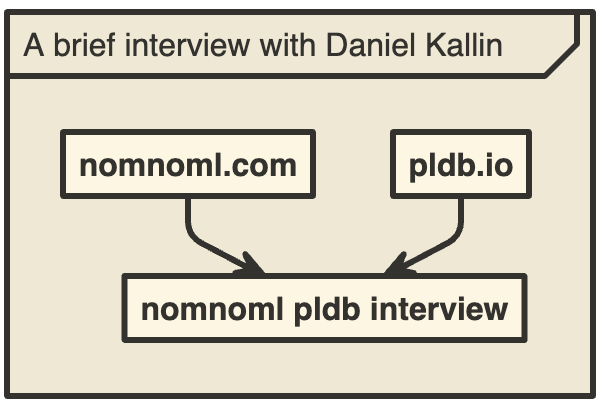

January 26, 2025 — Chris Lattner created many of the core platforms today's programmers build on including LLVM, Clang, Swift and MLIR. Now he is focused on a new language, Mojo, which allows Python programmers to write code that runs orders of magnitude faster. Chris took the time to talk to us about some of the new stuff in Mojo; his path toward mastering the entire stack; and his daily habits that help him produce hit after hit. Thank you for your time Chris!
Continue reading...October 31, 2024 — Moonbit builds fast Wasm. It is one of the fastest growing languages in PLDB, cracking the top 300 in less than 2 years. We got the chance to talk to Moonbit's creator, Hongbo Zhang, who explained to us why Moonbit exists and the effort that has gone into creating the language, compiler, and tooling behind it. Thank you for your time Hongbo!
Continue reading...August 15, 2024 — Steven Drucker's SandDance (⌨️) is both twenty years in the future and timeless. SandDance allows humans to see and interact with data the way you interact with particles in the real world. Steven sat down with us to talk about the origins of SandDance and his 29 years at Microsoft Research. Thank you for your time Steven!

Visualizing PLDB using SandDance.
August 7, 2024 — Douglas Crockford is well known for creating JSON, which serves billions everyday, but less known is his deep understanding of language design and how much insight he shares with the world. Douglas was generous enough to take a small break from his own projects to chat with us about language design. Thank you for your time Douglas!
Continue reading...July 25, 2024 — Daniel Kallin's brilliant homepage shows technical chops and design passion. Therefore it's not surprising that Daniel created nomnoml: a fast language and tool for generating beautiful diagrams. Daniel sat down with us to talk about nomnoml, which he designed for users to "feel like you're drawing with Ascii". Thank you for your time Daniel!

February 27, 2023 — Mike Cowlishaw is a distinguished computer scientist and creator of Rexx and NetRexx. He has worked on many other programming languages, including PL/I, C, and Java. Dr. Cowlishaw is a Visiting Professor at the Department of Computer Science at the University of Warwick. He is a Fellow of the Royal Academy of Engineering, elected for his contributions to the field of engineering, and is a retired IBM Fellow. His relentless spirit has catapulted too many contributions to count yet he remains humble and accessible :)
Continue reading...February 8, 2023 — Dr. John Ousterhout is a computer science luminary who has made significant contributions to the field of computer science, particularly in the areas of operating systems and file systems. He is the creator of the Tcl scripting language, and has also worked on several major software projects, including the Log-Structured file system and the Sprite operating system. John Ousterhout's creation of Tcl has had a lasting impact on the technology industry, transforming the way developers think about scripting and automation.
Continue reading...January 24, 2023 — Josef Pospíšil (Pepe) is a programming enthusiast, first with Basic in 1986, then the first Rubyist in the Czech Republic, and now a contributor to the language Janet.
Continue reading...November 22, 2022 — Dr. Kartik Agaram is a professional programmer by day and the author of several open source projects that try to demystify computers. His projects all show a great love for programming and empathy for readers grappling with a strange codebase.
Continue reading...November 18, 2022 — Niklaus Wirth(🙏🏽) has designed programming languages all over the world that have had immense impact. And yet, he still maintains great humility and somehow finds time for mentoring the next crop of programming language designers. Thank you for your time Dr. Wirth!
Continue reading...November 15, 2022 — Dr. Brian Kernighan is a Canadian computer scientist who contributed to the development of UNIX at Bell Labs. Along with Dennis Richie, he co-authored a fundamental book on C, The C Programming Language. He has been training the next generation of programmers at Princeton University since 2000 and has been monumental in his contribution to the computer science community at large. He wrote the first documented “Hello World!” program and to that we say, “Hello, Brian!”.
Continue reading...November 11, 2022 — Dr. Scott Fahlman is a Professor Emeritus in the Carnegie Mellon’s School of Computer Science. He is a computer programming language connoisseur and the original neural network jedi master. He was one of the core developers of the Common Lisp Language and his current work includes Artificial Intelligence. Dr Fahlman is as notably kind as he is a humble scientist. Befittingly, he is the originator of the internet's first emoticon, sideway smile :-)
Continue reading...